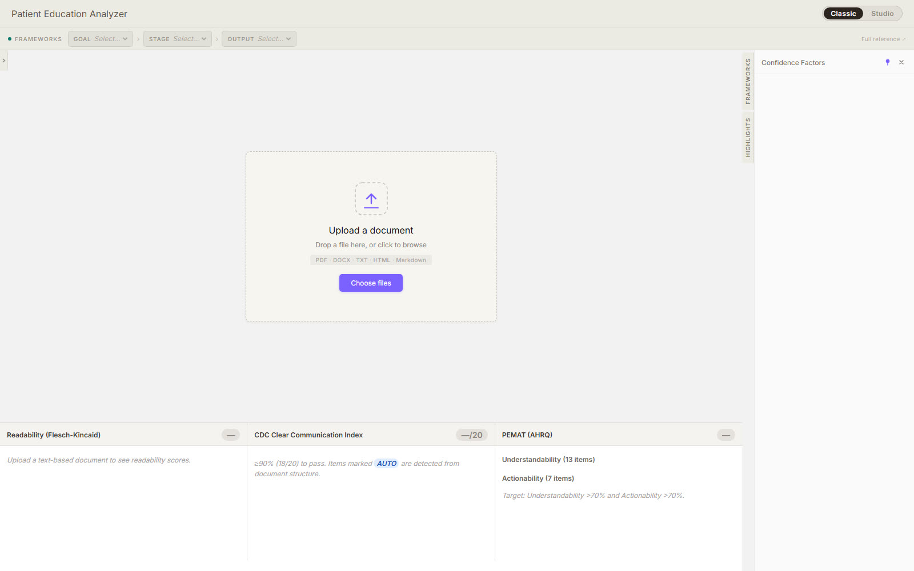
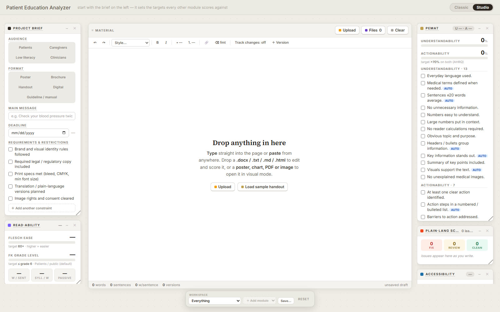
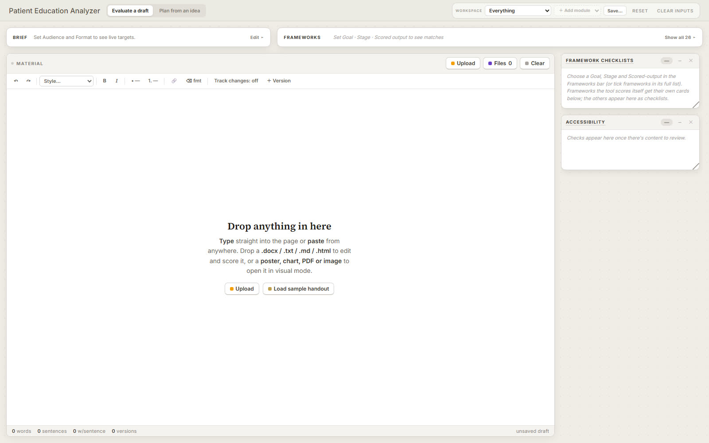
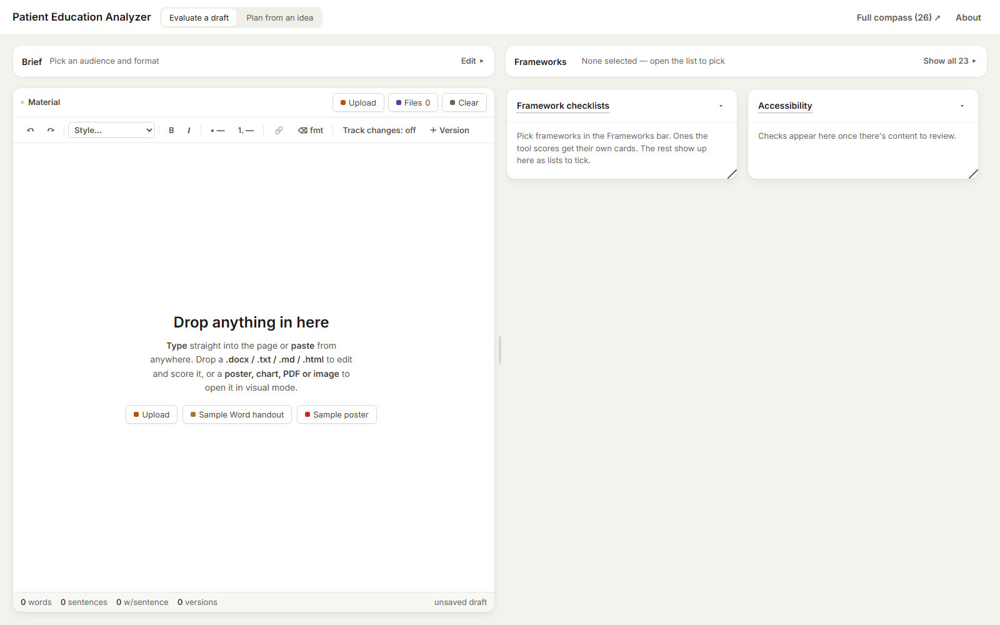
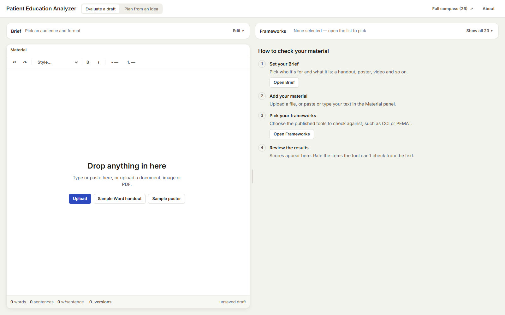
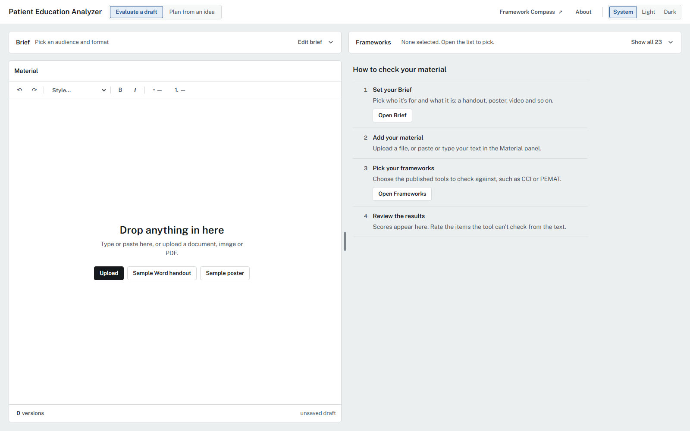
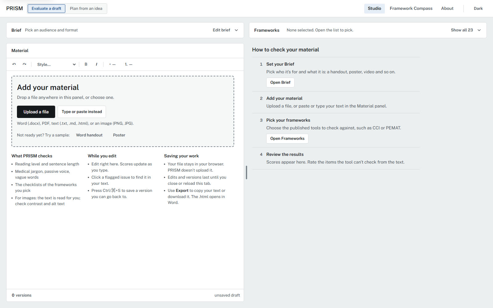
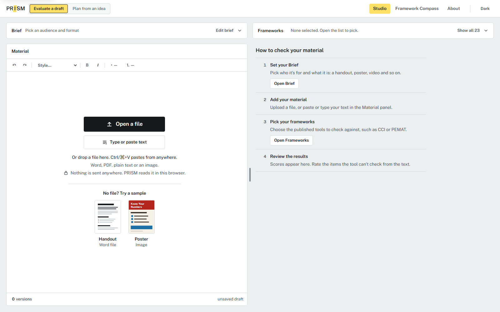

The Barrier
Just Dropped
From napkin sketch to clickable prototype.
Feedback: prism@goinvo.com
This project is licensed under Apache 2.0 (code) and Creative Commons Attribution 4.0 (designs).
Background: napkin sketch generated with Nano Banana (Google Gemini), animated in code.
The question that started it
Did my visual actually make a difference?
My work left at handoff. I never learned if it helped.
SoniaVideo: generated with Veo (Google Gemini)
What we
brought.
Sonia: the framework idea
Had never used Claude or tools like it.
Chloe: AI fluency, open source
Had never heard of these frameworks.
Each knew what the other didn’t.
Background: The Creation of Adam, Michelangelo, c. 1512, public domain. Flowers and motion: Veo (Google Gemini)
.jpg){kind=link}
Camera phones didn’t end photography.
They made everyone
a photographer.
AI just did that for software.
Video: “Shot on iPhone 18 Pro: new trick”, Apple
Bring your draft.
Private by defaultFiles and text never leave your browser.
BriefChoose audience and format. PRISM sets the reading target.
FrameworksPick from 14 published frameworks, grouped by area.
Plain language, on by defaultFix one, edit in the text, or apply all.
Revert any change from History.
Check it, or plan it.
ImagesChecks contrast and alt text,
with colour-blind and greyscale views.
Drop or pasteWord, PDF or text opens as an editable draft.
Framework CompassOne click from the Studio:
how each of 14 frameworks is scored, with its source.
Plan from an ideaStoryboard a new piece. Each check cites its framework item.
Eight homepages in 18 hours.
My prompt · 0 h
use the framework list we already have, build a tool that checks patient handouts against it, make a [stepped guidance] so people know where to start, show scores as cards
Chloe, Jul 31
My prompt · 1 h
merge studio into the main page, make it feel like a [workspace], brief on one side, material in the middle, checklists on the other
Chloe, Aug 17
Prompt · 3 h
split it into [evaluate a draft] and [plan from an idea], keep it lighter, less boxes
Sonia, Oct 9
My prompt · 9 h
The main workspace/canvas doesn’t need to be this big, the smallest font size on the site should be bigger than 12px.
Chloe, Oct 16
My prompt · 10 h
In empty space, give big simple bullet point steps to guide user through, upload/paste text, select framework etc. Vet entire site for font treatments … we should only use max of 8 treatments throughout
Chloe, Oct 16
My prompt · 12 h
the whole design can use an upgrade, more taste, less ai look, light and dark mode
Chloe, Oct 16
My prompt · 15 h
improve the 23 frameworks dropdown, better grouping and recommended group for situations
Chloe, Oct 17
My prompt · 18 h
make button center, make where to type and paste more obvious, show where history log/change log is
Chloe, Oct 19
- 131commits
- 23sittings
- 23Mtokens
- 0developers








29 hours
of building, over 16 days.
- 131commits
- 23sittings
- 23Mtokens
- 0developers
/ Hours from commit times. Tokens: Chloe’s Claude Code, Aug 17 to Nov 4. Video: room by Nano Banana (Google Gemini), animated in code.
- Intent first.Know what you’re here for.
- Build fast.AI is quick, and great for brainstorming.
- Iterate.Show it, change it, cut it back.
AI gives you the average. You’re the designer.
AI drafted it. We reviewed it.
| A | B | C | D | E | F | G | H | I | J | K | L | M | |
|---|---|---|---|---|---|---|---|---|---|---|---|---|---|
| 1 | # | Framework | Full name | Zone | Output | Modes | Role | Decision | Plan mode use | Evaluate mode use | Why / notes | To verify | Source |
| 2 | 1 | CCI | CDC Clear Communication Index | Clarity & content | Score | Both | Audit | Keep | Design target: main message, behavioural guidance, numbers presented clearly. | Scores the draft against the 20 items. | The most unambiguous of the set; natural anchor for the Document Audit screen. | Confirm the 20-item count and the 90% pass threshold against the CDC source. | CDC Clear Communication Index |
| 3 | 2 | PEMAT-P | Patient Education Materials Assessment Tool (printable) | Clarity & content | Score | Both | Audit | Keep | Design target for understandability and actionability. | Two scores: understandability and actionability. | Built for exactly this use; separates 'can they understand it' from 'can they act on it'. | Confirm item count and the 70% threshold. | AHRQ PEMAT-P |
| 4 | 3 | SAM | Suitability Assessment of Materials | Clarity & content | Score | Both | Audit | Keep | Design target for graphics, layout and literacy demand. | Scores the draft factor by factor. | Most granular on graphics and layout. Some factors (e.g., cultural fit) need rater judgment. | Item count: earlier in this thread I cited 26 criteria; 22 factors is the commonly cited count. Confirm against the source. | Doak, Doak & Root (1996), via KP Washington Research |
| 5 | 4 | CDC Inclusive Comms | CDC Health Equity Guiding Principles for Inclusive Communication | Clarity & content | Checklist | Both | Audit | Keep | Preferred terms and principles to write with. | Checks the draft's language against the principles. | Covers equity, which the scored tools miss. Preferred-term checks could be partly automated. | Confirm the current version. | Calanan et al., Preventing Chronic Disease (2023) |
| 6 | 5 | UPL | Universal Patient Language Best Practices (Bristol Myers Squibb) | Clarity & content | Checklist | Both | Audit | Keep | Best practices to build the content around. | Yes/no checks against the draft. | Relevant to pharma; overlaps somewhat with CCI. | Your file says 9 best practices; an earlier search described 7 principles. Check the guidance document. | UPL Guidance Document (PDF) |
| 7 | 6 | EPPM | Extended Parallel Process Model | Behaviour change | Checklist | Both | Lens | Keep | Pair every risk message with a clear, doable action. | Checks whether risk messages in the draft come with an action. | The one behaviour model that can be checked at message level. | Witte (1992) | |
| 8 | 7 | IPDAS | International Patient Decision Aid Standards | Decisions & conversations | Partial | Both | Audit | Keep (conditional) | Standards to design a decision aid to. | Checks a decision aid against the criteria. | Only applies to decision aids; output is partial rather than a clean score. | Ottawa Hospital Research Institute | |
| 9 | 8 | PEMAT-A/V | PEMAT for audiovisual materials | Clarity & content | Score | Both | Audit | Keep (conditional) | Design target for video and multimedia. | Scores a video or multimedia draft. | Same logic as PEMAT-P. Only matters if the tool will accept video. | Scope decision for you and Chloe: will the tool accept video? | AHRQ PEMAT-A/V |
| 10 | 9 | CDC IDD/ELL | CDC tool for adults with intellectual disability or extreme low literacy | Clarity & content | Score | Both | Audit | Keep (conditional) | Design target for very-low-literacy audiences. | Scores the draft on the score sheet. | Only for readers with IDD or very low literacy. Keep if the intake can route to it. | Confirm the 27-item count and that the niche fits your users. | CDC Stacks (PDF) |
| 11 | 10 | Readability | Flesch Reading Ease and Flesch-Kincaid Grade | Clarity & content | Score | Evaluate only | Audit | Keep | At most, set a target reading grade. | Computes grade and ease automatically. | The only fully automatable entry. Narrow but cheap and reliable. Candidate to expand with other formulas (see Consider adding tab). | Flesch (1948) | |
| 12 | 11 | DISCERN | Quality of written information about treatment choices | Clarity & content | Score | Evaluate only | Audit | Keep (conditional) | — | Rates the quality of treatment-choice information. | Needs subject-matter judgment, and only applies to treatment-choice material. | University of Oxford | |
| 13 | 12 | COM-B | Capability, Opportunity, Motivation – Behaviour model | Behaviour change | Checklist | Plan only | Lens | Keep (judgment call) | Diagnose capability, opportunity and motivation before designing. | — | Most usable behaviour model for design work. First to cut if the library goes strictly document-centred. | Michie, van Stralen & West (2011) | |
| 14 | 13 | HBM | Health Belief Model | Behaviour change | Checklist | Plan only | Lens | Bring back | Shape the message around beliefs about risk, barriers and benefits. | — | Was parked because it can't score a document. It clearly helps someone planning a resource. | Rosenstock (1974) | |
| 15 | 14 | TTM | Transtheoretical Model (Stages of Change) | Behaviour change | Checklist | Plan only | Lens | Bring back | Match the message to the audience's readiness to change. | — | Was parked because it can't score a document. It clearly helps someone planning a resource. | Prochaska & Velicer (1997) | |
| 16 | 15 | Ottawa DSF | Ottawa Decision Support Framework | Decisions & conversations | Partial | Plan only | Lens | Keep (judgment call) | Identify decisional needs before building a decision aid. | — | Underpins decision aids; sits next to IPDAS. Could be cut for a strictly document-centred library. | Ottawa Hospital Research Institute | |
| 17 | 16 | Teach-Back | Teach-Back Method | Decisions & conversations | Checklist | Plan only | Lens | Keep (judgment call) | Design materials that support teach-back. | — | A technique, not a rubric. A draft can only be partly checked for prompts that support it. Practitioners recognise it immediately. | AHRQ Toolkit, Tool 5 | |
| 18 | 17 | NCI Pink Book | Making Health Communication Programs Work (National Cancer Institute) | Clarity & content | Method / guide | Plan only | Lens | Bring back | Audience research, message pretesting and evaluation planning for a communication program. | — | Back from the old chart. A planning guide whose pretesting step leads naturally into evaluate mode. Program-level rather than single-handout. | This is the 2002 edition; check whether NCI has published a newer one. | NCI Pink Book (PDF) |
| 19 | 18 | EBCD | Experience-Based Co-Design | Experience & partnership | Method / guide | Plan only | Lens | Bring back | Co-design improvements with patients and staff; closest match to the human-centred design methods you wanted to name for your work sample. | — | Back from the old chart. Fits best for care pathways and services, less for a single handout. Replaces PCORI as the patient-partnership entry. | Toolkit was last updated in 2013; a King's College London / Picker project describes a planned redesign, so check for the current version. | Point of Care Foundation EBCD toolkit |
| 20 | 19 | PAM | Patient Activation Measure | Experience & partnership | Score | Plan only | Outcome | Keep (check licensing) | Choose how you will measure patient impact after launch. | — | Measures the patient, not the resource, so it can't evaluate a draft. It is the bridge from 'was the resource well made' to 'did it help patients'. | Licensed instrument (Insignia Health charges a licensing fee): confirm what you can include beyond a reference link. DOI confirmed. | Hibbard et al. (2004), Health Services Research |
| 21 | 20 | SHARE | The SHARE Approach | Decisions & conversations | Checklist | Plan only (if scope fits) | Lens | Scope-dependent | Frame shared decision-making conversations around the resource. | — | Structures a clinical conversation. Only relevant if plan mode covers care pathways or programs. | AHRQ | |
| 22 | 21 | AHRQ Toolkit | AHRQ Health Literacy Universal Precautions Toolkit | Decisions & conversations | Checklist | Plan only (if scope fits) | Lens | Scope-dependent | Organisational practices around a resource; includes tools on designing materials. | — | Organisational practice change. Only relevant if plan mode covers programs or services. | AHRQ | |
| 23 | 22 | Picker | Picker Principles of Person Centred Care | Experience & partnership | Checklist | Plan only (if scope fits) | Lens | Scope-dependent | Principles for designing care pathways and services. | — | Care-model principles, closest to 'experience as a whole'. Fits only if plan mode covers pathways or services. | Picker | |
| 24 | 23 | WHO ERC | WHO Emergency Risk Communication guideline | Behaviour change | Checklist | Plan only (if scope fits) | Lens | Scope-dependent | Principles for planning urgent or crisis communications. | — | Agency-level emergency communication. Relevant only if practitioners write urgent or crisis materials. | Add an interview question: do practitioners write urgent or crisis communications? | World Health Organization (2017) |
AI drafted it. We reviewed it.
Keep · 7
- CCI
- PEMAT-P
- SAM
- CDC Inclusive
- UPL
- EPPM
- Readability
With conditions · 8
- IPDAS
- PEMAT-A/V
- CDC IDD/ELL
- DISCERN
- COM-B
- Ottawa DSF
- Teach-Back
- PAM
Brought back · 4
- HBM
- TTM
- NCI Pink Book
- EBCD
Depends on scope · 4
- SHARE
- AHRQ Toolkit
- Picker
- WHO ERC
Cut · 9
- EQIP
- Plain Language
- PCORI
- OPTION
- CAHPS
- NPS
- Beryl PX
- Planetree
- SEIPS
Certify the work, not the AI.
This screen, this flow, this version: fit for purpose, under these conditions.
Safety · Data integrity · Regulatory fit · Usability · Language · Bias · Flow
The barrier dropped. The responsibility didn’t.
Illustration by Chloe Ma, animated with Veo (Google Gemini), from Human-Assisted AI Design Certification for Healthcare
What’s your view
on our approach?
- Open sourceFree to use and extend.
- See the gapsWhere frameworks overlap, and don’t.
- Build with usCollaborators and feedback welcome.
Code on GitHub, licensed Apache 2.0. Designs licensed CC BY 4.0. Drawing the Line · UofT Biomedical Communications · November 2026